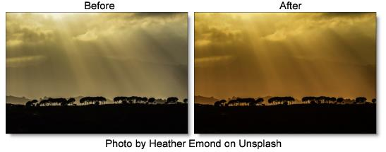

Dual Gradient
Description
Dual Gradient applies two photographic filters to the image which are blended together with a gradient. Presets for your favorite Color Gradient filters are provided as well as the ability to create custom colors.
Category
Grads/Tints.
Controls
Presets
To select a preset, pick one from the Presets window.
Color 1
Sets the color for the top half of the image. Select the desired color using the color picker or choose a filter preset.
Presets
Select one of the filters from the pop-up menu.
Color
The Color parameter sets the color of the grad through the use of a standard color picker.
Opacity
Sets the opacity of the color filter.
Color 2
The Color 2 controls are the same as the controls for Color 1 except it is applied to the bottom half of the image.
Preserve Highlights
Preserves the white areas of the image.
Exposure Compensation
Exposure Compensation adds back the brightness loss as a result of the filter application.
Grad
Grad is the transition area between the two tints. Its direction, corners and size can be adjusted. Go to the
Grad section of Common Filter Controls to see how the Grad controls work.